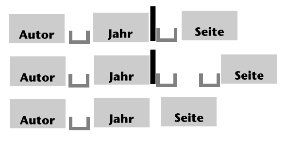

7.3 Quellenangabe (Kurzbeleg)
Bei jedem Zitat – gleich ob wörtlich oder sinngemäß – muss angegeben werden, woher es stammt. Dazu gibt es verschiedene Methoden, wie etwa Fußnoten, Endnoten oder Kurzbelege im Text. Wir beschreiben hier die inzwischen fast allgemein übliche Harvard-Notation“ mit Kurzbelegen, die wir empfehlen, wenn man sich die Methode der Quellenangabe frei aussuchen kann. Wenn aber z. B. der Fachbereich oder der Verlag ein anderes System vorschreiben, muss man sich natürlich daran halten. Als Grundform der Harvard-Notation kann gewählt werden:

Abb. 7.2: Grundmuster des Kurzbelegs
Grundsätze bei der Verwendung von Kurzbelegen sind:
- Konsistenz: Gleich, welche dieser Formen Sie wählen (wobei sich der Doppelpunkt durchzusetzen scheint), Sie müssen sie in der gesamten Arbeit beibehalten.
- Eindeutigkeit: Der Kurzbeleg muss so abgefasst sein, dass das zitierte Werk in der Literaturliste eindeutig identifiziert werden kann.
- Literaturverzeichnis: Zu diesen Kurzbelegen gehört notwendig ein Literaturverzeichnis, in dem die volle Quellenangabe anhand des Kurzbelegs zweifelsfrei und mühelos gefunden werden kann.
- Kürze: Der Kurzbeleg soll tatsächlich so kurz wie möglich sein, alle unnötigen Wiederholungen sind zu vermeiden. Daher gibt es zur Grundform noch weiter abgekürzte Varianten.
Die wichtigsten Fragen und Zweifelsfälle dazu sind in der folgenden Tabelle zusammengefasst:
| Frage … | Antwort | Beispie(e) |
|---|---|---|
| Wo steht der Kurzbeleg? | so nah am Zitat wie möglich, ohne den Lesefluss zu stören, und so nah wie nötig, um eindeutig zuordenbar zu sein. | Es werden dafür auch die Begriffe „ABC“ (Müller 1998) und „XYZ“ (Meier 1999) verwendet. ; Es wird dafür auch der Begriff „ABC“ verwendet. (Schmidt 1997) |
| Was tun, wenn zwei gleichnamige Autoren vorkommen? | Initialen anfügen, selbst wenn die Werke durch die Jahreszahl unterscheidbar wären | (Müller J. 1991:127) und (Müller H. 1987:36) |
| Wie sieht der Kurzbeleg für ein Werk mehrerer Autoren aus? | Zwei Namen müssen, drei Namen können angeführt werden; ab 3 Namen: 1. Name (wenn eindeutig) und „et al.“ anfügen | (Müller und Mayer 2003); (Müller, Mayr & Schmidt 1993:124) bzw. (Müller et al. 1993:124) |
| Wie unterscheidet man Werke eines Autors mit demselben Erscheinungsjahr? | Buchstaben a, b, c an das Jahr anhängen, u. zw. in der Reihenfolge der Erwähnung im Text | (Maier 1992a:231-4) … einige Seiten später … (Maier 1992b:27) |
| Kann man auch auf ein Werk insgesamt, ohne Seitenangaben verweisen? | Ja, wenn man sich auf ein gesamtes Werk bezieht. Der Kurzbeleg bleibt dann ohne Seitenzahl, evt. „Vgl.“, „cf.“ oder kurze Anmerkung voranstellen. Elektronische Quellen haben oft keine Seitenzahlen. | (cf. Müller 1991) … (Vgl. dazu auch Maier 1994) … (ausführlicher dazu Schmidt 1990) |
| Wie hängt man mehrere Kurzbelege aneinander? | in einer gemeinsamen Klammer | (Vgl. Müller 1991, Mayr 1993 und Schmidt 1995) |
| Wie erwähnt man mehrere Werke eines Autors in einem Kurzbeleg? | Nach dem Prinzip „Keine Verdopplungen“ – nur Jahreszahlen | (Vgl. Schmidt 1991a und b, sowie 1993) |
| Wie gibt man einen Seitenbereich statt einer einzigen Seitenzahl an? | mit Binde-Strich und auf das Notwendigste gekürzt; auch „f.“ (folgende Seite) und „ff.“ (ferner folgende Seiten) sind erlaubt, aber ungenauer | (Müller 1992:351–3); (Mayr 1994:359–61); (Schmidt 1987:124f.) |
| Was tun, wenn der Kurzbeleg unsinnig wirkt, wie z. B. bei bekannten alten, aber neu aufgelegten Werken wie (Grimmelshausen 1993) oder (Rousseau 1965)? | Im Kurzbeleg kann das tatsächliche Erscheinungsjahr stehen, das Literaturverzeichnis muss allerdings auch genau die verwendete Ausgabe enthalten | (Grimmelshausen 1668) ; (Rousseau 1753) ; (zu den Angaben im Abschnitt 7.5: Das Literaturverzeichnis siehe unten) |
| Muss der Kurzbeleg jedes mal so gemacht werden, auch wenn immer wieder aus demselben Werk zitiert wird? | Alles, was sich wiederholen würde, kann wegbleiben, solange für den Leser die Quelle klar ist. Es genügt die Seitenangabe, oder sogar ein „ebd.“, wenn auch die Seite unverändert bleibt. | 1. Zitat (Müller 1991:351) … 2. Zitat (S. 353) … 3. Zitat (ebd.). aber ein paar Seiten später: 4. Zitat (Müller 1991:123) |
| Muss der Kurzbeleg komplett angegeben werden, wenn Teile davon schon im Text erwähnt sind? | Es genügen immer jene Angaben, die zur vollständigen Identifizierung noch fehlen. | Müller betont, dass „Zitat“ (1991:351). ; Mayr vertrat schon 1956 die Auffassung, dass „Zitat“ (S. 124). |
| Wie werden Werke zitiert, die nur unter ihrem Titel bekannt sind? | nach dem Ordnungswort, unter dem sie auch im Literaturverzeichnis erscheinen. Konversationslexika u. dgl. brauchen nicht zitiert zu werden! | (Fischer Weltalmanach 1988:117) |
| Ist es möglich, eine Abkürzung des Titels statt des Kurzbelegs zu verwenden, wenn ein Werk oft zitiert wird? | Wenn Werke eingehend analysiert werden (= Gegenstand der Arbeit sind), kann ein Stichwort oder eine standardisierte Abkürzung verwendet werden; die Jahreszahl bleibt weg. | (TKH:214–18) statt (Habermas 1981:214–18); (cf. GB) statt (cf. Chomsky 1981) |
| Darf man solche Abkürzungen selbst erfinden, und wie führt man sie ein? | Nur wenn es nicht bereits eine fachintern übliche gibt, und nur für Werke, die in der Arbeit eine zentrale Rolle spielen. Beim ersten Zitat normaler Kurzbeleg u. Hinweis auf Abkürzung; evt. Abkürzungsverzeichnis | 1. Zitat (Habermas 1981:103, im folgenden TKH) … 2. Zitat (TKH:105). (TKH = Theorie des kommunikativen Handelns) ; In den „Lectures on Government and Binding“ (Chomsky 1981, im folgenden mit GB abgekürzt) … |